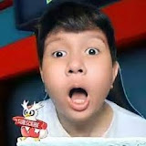

Back to Dashboard
Windah Basudara
Windah adalah salah satu YouTuber gaming paling terkenal di Indonesia. Dikenal dengan gaya yang nyentrik dan kocak, dia sering memainkan game horror, action, dan juga suka berbagi cerita-cerita lucu yang relate dengan penontonnya. Selain hiburan, Windah juga aktif berdonasi dan menyebarkan kebaikan lewat komunitasnya.
Kunjungi Channel